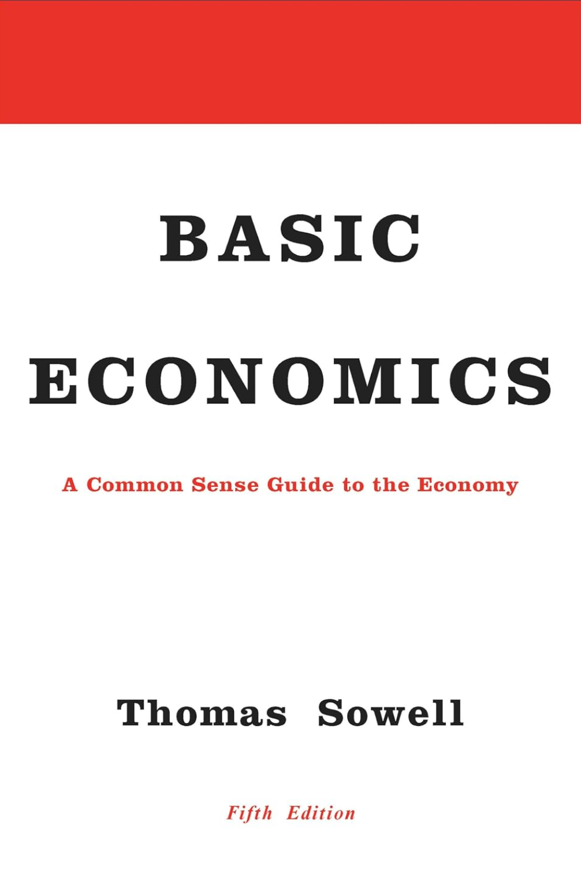

Critique
Chapter 1
Pages 17–18
“Economics is not just about dealing with the existing output of goods and services as consumers. It is also, and more fundamentally, about producing that output from scarce resources in the first place—turning inputs into output. In other words, economics studies the consequences of decisions that are made about the use of land, labor, capital and other resources that go into producing the volume of output which determines a country’s standard of living. Those decisions and their consequences can be more important than the resources themselves, for there are poor countries with rich natural resources and countries like Japan and Switzerland with relatively few natural resources but high standards of living. The values of natural resources per capita in Uruguay and Venezuela are several times what they are in Japan and Switzerland, but real income per capita in Japan and Switzerland is more than double that of Uruguay and several times that of Venezuela.”
Critique
My main issue here is that Sowell drastically oversimplifies these international comparisons. His point is that the consequences of decisions can be more important than the resources themselves, comparing resource-rich countries like Venezuela and Uruguay with resource-poor countries like Japan and Switzerland, which nevertheless have much higher standards of living. The comparison itself is fine, but he provides almost no context for why these countries developed differently.
It isn't even apples to oranges. Venezuela has historically existed under very different geopolitical conditions than Switzerland, including colonial and neocolonial relationships, foreign intervention, sanctions, dependency on commodity exports, and broader imperial and neoliberal pressures. Switzerland, meanwhile, has occupied a radically different position within the global economic system and has, in some contexts, benefited from that system.
So yes, decisions matter—but those decisions aren't made in a vacuum. They are constrained and shaped by history, geography, existing institutions, colonial relationships, international markets, and geopolitical power. Sowell repeatedly reduces enormously complicated differences between countries to the economic decisions they made while leaving much of the global geopolitical superstructure within which those decisions were made almost entirely unanalyzed.
Chapter 2
Pages 46–47
“Different economic systems deal with this underlying reality in different ways and with different degrees of efficiency, but the underlying reality exists independently of whatever particular kind of economic system happens to exist in a given society. Once we recognize that, we can then compare how economic systems which use prices to force people to share scarce resources among themselves differ in efficiency from economic systems which determine such things by having kings, politicians, or bureaucrats issue orders saying who can get how much of what.”
Critique
This framing risks presenting an overly clean market-versus-central-planning dichotomy. The United States is, as are all modern states, a mixed economy in which market activity operates alongside extensive government regulation, subsidies, monetary policy, public investment, price interventions, and other forms of state involvement.
Pages 50–51
“When many African colonies achieved national independence in the 1960s, a famous bet was made between the president of Ghana and the president of the neighboring Ivory Coast as to which country would be more prosperous in the years ahead. At that time, Ghana was not only more prosperous than the Ivory Coast, it had more natural resources, so the bet might have seemed reckless on the part of the president of the Ivory Coast. However, he knew that Ghana was committed to a government-run economy and the Ivory Coast to a freer market. By 1982, the Ivory Coast had so surpassed Ghana economically that the poorest 20 percent of its people had a higher real income per capita than most of the people in Ghana. This could not be attributed to any superiority of the country or its people. In fact, in later years, when the government of the Ivory Coast eventually succumbed to the temptation to control more of their country’s economy, while Ghana finally learned from its mistakes and began to loosen government controls on the market, these two countries’ roles reversed—and now Ghana’s economy began to grow, while that of the Ivory Coast declined.”
Critique
Sowell has done this several times already with different countries, and I’ll probably go back through each example individually, but his comparison of Ghana and the Ivory Coast from independence in the 1960s through the early 1980s is a particularly good example of the problem. In a way that is, fittingly, incredibly basic, he essentially reduces the comparison to: Ghana adopted a more government-run economy and performed poorly, while the Ivory Coast adopted a freer market and prospered. Therefore, the difference in economic outcomes can largely be explained by their respective approaches to markets and government control.
The problem is that these countries did not exist in a vacuum, and contextualizing their histories makes the comparison dramatically more complicated. Ghana under Kwame Nkrumah pursued socialist Pan-Africanism, industrialization, and an explicitly anti-colonial economic project. Nkrumah was then overthrown in the 1966 coup, which occurred amid documented American involvement, and the industrialization project Sowell is implicitly evaluating was subsequently dismantled. By the 1980s, Ghana under Jerry Rawlings was adopting IMF structural-adjustment programs, privatizing state enterprises, cutting social spending, and taking on IMF debt, while World Bank-trained economic management increasingly shaped economic policy. In other words, Ghana's trajectory cannot be reduced to simply trying a “government-run economy,” discovering that it failed, and eventually “learning from its mistakes” by embracing markets.
The Ivory Coast is equally difficult to reduce to Sowell's narrative. It certainly experienced the celebrated “Ivorian Miracle” under a comparatively liberal, foreign-capital-friendly economic model. But that growth also produced enormous export dependency, foreign debt, dependence on cocoa and other commodities, and extensive foreign influence. This all led to a collapse, and the country turned to the IMF and World Bank, whose structural-adjustment programs brought further privatization, liberalization, austerity, and weakening of national economic autonomy. France also retained substantial political and economic influence after formal independence, including through the CFA franc system. So even the supposedly straightforward free-market success story eventually produced serious vulnerabilities that Sowell's comparison leaves almost entirely outside the frame.
None of this means that the economic systems Ghana and the Ivory Coast chose were irrelevant. Obviously, economic policy matters, and particular policies should be evaluated on their merits. The problem is the degree of explanatory weight Sowell places on that single variable while excluding massive pieces of the story: colonialism and neocolonialism, coups and political instability, foreign intervention, commodity dependence, debt, IMF and World Bank structural adjustment, foreign capital, and the countries' radically different relationships with their former colonial powers.
Once those factors are included, the comparison becomes vastly more complicated than “government-run Ghana failed while free-market Ivory Coast succeeded.” Sowell's comparison isn't necessarily useless; it's simply so stripped of historical and geopolitical context that it cannot support anything close to the sweeping conclusion he draws from it. Once again, it is a remarkably basic analysis of an extraordinarily complicated history.
Pages 52–53
“In China, the transition to a market economy began earlier, in the 1980s. Government controls were at first relaxed on an experimental basis in particular economic sectors and in particular geographic regions earlier than in others. This led to stunning economic contrasts within the same country, as well as rapid economic growth overall. Back in 1978, less than 10 percent of China’s agricultural output was sold in open markets, instead of being turned over to the government for distribution. But, by 1990, 80 percent was sold directly in the market. The net result was more food and a greater variety of food available to city dwellers in China, and a rise in farmers’ income by more than 50 percent within a few years. In contrast to China’s severe economic problems when there was heavy-handed government control under Mao, who died in 1976, the subsequent freeing up of prices in the marketplace led to an astonishing economic growth rate of 9 percent per year between 1978 and 1995.”
Critique
In progress.
Chapter 3
Critique
As I finish Chapter 3, something I’ve noticed—really going back into Chapter 2 as well—is that Sowell’s reasoning seems to follow a recurring pattern. As a free-market absolutist, which he never explicitly says he is but then spends much of the book effectively defending, his argument seems to be that if we can logically identify a negative externality or unintended consequence that might result from a policy interfering with the market, then we no longer need to conduct any meaningful cost-benefit analysis. We can simply throw the policy out altogether.
Normally, the existence of negative externalities would be the beginning of the analysis, not the end of it. We understand that policies are going to have trade-offs and unintended consequences. The question is whether those consequences can be mitigated or offset, or whether the benefits of the policy outweigh them. We might determine that a policy causes problems A, B, and C, but solves problems X, Y, and Z to a significantly greater degree. We then net those effects out and ask whether the policy actually makes the situation better overall. That is the point of a cost-benefit analysis.
Sowell, however, seems to repeatedly skip that step. He identifies a market-interference policy—price controls, rent controls, anti-price-gouging laws, etc.—then identifies some negative incentive or unintended consequence produced by that policy and treats this as sufficient reason to reject the intervention altogether. There is remarkably little consideration of whether the policy also produces benefits, whether those benefits outweigh its costs, whether the negative effects could be addressed through complementary policies, or whether a differently designed intervention could accomplish the same objective more effectively.
The final section of Chapter 3 is essentially an extended argument for why price gouging is actually beneficial, supported by a handful of made-up but realistic scenarios illustrating how higher prices can ration scarce resources. Again, though, the underlying reasoning remains the same: identify problems created by interfering with market prices and then treat those problems as an argument for simply allowing the market to operate freely, even under catastrophic circumstances.
That ultimately strikes me as the easiest, most anti-analytical and unimaginative policy position available. Rather than comparing competing systems and interventions—including all of their respective costs and benefits—the default answer becomes: just let the free market do its thing.
Chapter 4
Page 129
“Just as primitive peoples tended to attribute such things as the swaying of trees in the wind to some intentional action by an invisible spirit, rather than to such systemic causes as variations in atmospheric pressure, so there is a tendency toward intentional explanations of systemic events in the economy, when people are unaware of basic economic principles.
…For example, while rising prices are likely to reflect changes in supply and demand, people ignorant of economics may attribute price rises to ‘greed.’ People shocked by the high prices charged in stores in low-income neighborhoods have often been quick to blame greed or exploitation on the part of the people who run such businesses.”
Critique
Sowell discusses the fact that lower-income communities sometimes face higher prices for the same goods and argues that people often attribute those higher prices to greed when there are legitimate economic explanations—higher transportation costs, fuel costs, distribution costs, lower economies of scale, and so on. That's fine. But he sets the argument up with this analogy that, just as people once didn't understand what caused the wind and therefore attributed the swaying of trees to ghosts or supernatural forces, people who don't understand basic economics attribute higher prices to greed.
Again, though, he's creating this strange false choice. You can explain why it costs more to get goods into certain poor communities without concluding that there is therefore no policy solution to the problem. The fact that the free market produces an understandable economic incentive doesn't mean we're suddenly prohibited from asking whether we can mitigate its negative consequences through policy. This goes back to the problem I've already identified: Sowell seems to treat identifying an unintended consequence of market intervention as an argument against intervention altogether, while treating negative outcomes produced by the market itself as simply economic realities that we have to accept.
There's also the implication that attributing higher prices to greed is simply the result of economic ignorance. That's demonstrably not always true. There are countless antitrust, price-fixing, consumer-protection, and FTC cases where corporations have been found to be deliberately exploiting their market position for greater profits. The pharmaceutical industry and insulin pricing are obvious examples to examine later. Just because greed doesn't explain every instance of high prices doesn't mean greed therefore explains none of them.
I'd also like to contrast Sowell's argument with modern dynamic pricing. Companies increasingly have the ability to vary prices using enormous amounts of consumer and geographic data, potentially allowing them to estimate what particular consumers or populations are willing or able to pay. I'd be interested to see Sowell's analysis of a system where two consumers can potentially encounter different prices not because the underlying cost of providing the good differs, but because a company believes one consumer can be induced to pay more.
Again, the idea that whatever price emerges from a sufficiently unrestrained market must therefore represent some perfectly optimized or socially desirable outcome is fantastical. Explaining why a market produces a particular price is not the same thing as demonstrating that the resulting distribution of goods, costs, and resources is desirable—or that nothing should be done about it.
Another issue with Sowell’s example is that he immediately moves on after explaining one case where higher prices in lower-income neighborhoods may have less to do with greed and more to do with higher operating and transportation costs. But one example where greed isn’t the explanation does not establish that greed is never the explanation.
By Sowell’s own standard of analysis here, I could seemingly dispel his argument with a single documented case where a company raised prices simply to widen its profit margins. Of course, that wouldn’t actually disprove his argument either—which is exactly the point. Providing one scenario where something is or isn’t true is not a thorough analysis of the concept; it’s an argument clever enough to sound compelling without actually establishing very much.
Page 130
“The painful fact that poor people end up paying more than affluent people for many goods and services has a very plain—and systemic—explanation: It often costs more to deliver goods and services in low-income neighborhoods. Higher insurance costs and higher costs for various security precautions, due to higher rates of crime and vandalism, are just some of the systemic reasons that get ignored by those seeking an explanation in terms of personal intentions.”
Critique
Sowell moves from higher prices in rural communities to check-cashing and banking, where higher prices cannot necessarily be explained by higher physical input costs. He argues that politicians and the media often mistake systemic causation—outcomes emerging from economic incentives and circumstances—for intentional causation, such as deliberate exploitation or discrimination.
The problem is that this can become a distinction without a difference. Exploitation and discrimination do not have to result from an individual consciously deciding to discriminate or exploit; they can themselves be systemic mechanisms. Racial, class, and gender hierarchies can shape bargaining power, access to capital, risk, geography, and economic opportunity even without an identifiable individual intentionally producing the resulting disparity.
So I agree with Sowell that systemic outcomes should not automatically be attributed to individual malicious intent. But that does not establish that exploitation or discrimination are alternatives to systemic causation; they are part of the system producing the outcome.
Page 147
“This can mean waiting in long lines at stores, as was common in the Soviet economy, or being put on a waiting list for surgery, as patients often are in countries where government-provided medical care is either free or heavily subsidized. Luck and corruption are other substitutes for price rationing. Whoever happens to be in a store when a new shipment of some product in short supply arrives can get the first opportunity to buy it, while people who happen to learn about it much later can find the coveted product all gone by the time they get there. In other cases, personal or political favoritism or bribery takes the place of luck in gaining preferential access, or formal rationing systems may replace favoritism with some one-size-fits-all policy administered by government agencies.”
Critique
This is a classic argument against universal or heavily subsidized healthcare, but the broader claim simply isn't borne out by international comparisons. It also reflects a recurring theme in Sowell's argument: identify some negative externality or trade-off created by a policy and then treat its existence as though no further cost-benefit analysis needs to be done. Even if longer wait times were an unavoidable consequence of universal healthcare, that alone would tell us very little about whether the system is preferable overall.
There are universal and heavily subsidized healthcare systems around the world that outperform the United States on numerous measures while spending substantially less on healthcare. In some cases, wait times are comparable to those in the United States; in others, people may accept longer waits for certain non-emergency procedures in exchange for dramatically lower financial barriers to receiving care. The relevant comparison is therefore not simply “which system has longer waiting times?” but what people receive in exchange for the total amount they pay through taxes, premiums, deductibles, copays, and other healthcare expenses.
The same applies to the argument that making healthcare cheaper at the point of service will cause people to consume dramatically more of it. Most people don't particularly want to go to the doctor. More importantly, if utilization does increase after financial barriers are removed, some of that increase represents people finally receiving healthcare that they previously needed but could not afford. People postponing medical or dental procedures because they are afraid of the bill isn't evidence that the market efficiently eliminated unnecessary demand; it may simply mean that price rationed necessary healthcare away from people who couldn't afford it.
That's ultimately the missing comparison. Sowell readily identifies waiting as a form of rationing, but price is also a rationing mechanism. The question is not whether healthcare will be rationed somehow—it inevitably will be—but whether rationing access substantially according to ability to pay produces better overall outcomes than the alternatives. Spoiler: it doesn’t.
Pages 150–151
“But they are unlikely even to pose the question whether the incremental benefit exceeds the incremental costs. There are no incentives for them to look at things that way. Nor are the media likely to. A New York Times article, for example, argued that there were few, if any, ‘useless’ regulations as if that was the relevant criterion. But neither individuals nor businesses are willing or able to pay for everything that is not useless, when they are spending their own money. No doubt there are reasons, or at least rationales, for the many government regulations imposed on businesses in Italy, for example, but the real question is whether their costs exceed their benefits:
Imagine you’re an ambitious Italian entrepreneur, trying to make a go of a new business. You know you will have to pay at least two-thirds of your employees’ social security costs. You also know you’re going to run into problems once you hire your 16th employee, since that will trigger provisions making it either impossible or very expensive to dismiss a staffer. But there’s so much more. Once you hire employee 11, you must submit an annual self-assessment to the national authorities outlining every possible health and safety hazard to which your employees might be subject. These include stress that is work-related or caused by age, gender and racial differences. You must also note all precautionary and individual measures to prevent risks, procedures to carry them out, the names of employees in charge of safety, as well as the physician whose presence is required for the assessment. . . . By the time your firm hires its 51st worker, 7% of the payroll must be handicapped in some way. . . Once you hire your 101st employee, you must submit a report every two years on the gender dynamics within the company. This must include a tabulation of the men and women employed in each production unit, their functions and level within the company, details of compensation and benefits, and dates and reasons for recruitments, promotions and transfers, as well as the estimated revenue impact.”
Critique
What's remarkable here is that Sowell is criticizing politicians and the media for essentially the inverse of what he has spent much of the book doing himself. He claims that politicians have little incentive to examine the incremental costs of regulation, while the media similarly focuses on the benefits without adequately considering the costs. But he doesn't actually establish that this is how either group generally evaluates regulation; he largely asserts that it's unlikely they would conduct this kind of cost-benefit analysis, then cites the headline of a New York Times article as an example.
Even granting his characterization, though, he's criticizing them for precisely the analytical failure I've been flagging throughout the book. Sowell repeatedly takes some regulation or market intervention, identifies a logically plausible negative consequence, and then treats that cost as an argument against the intervention without giving comparable consideration to its benefits. Here, he's accusing an imaginary politician or media establishment of doing the inverse: identifying a benefit of regulation and ignoring its costs. If that's inadequate analysis when they do it, it's inadequate analysis when Sowell does it.
More importantly, the suggestion that policymakers simply don't conduct this kind of analysis is bizarre. There is an enormous literature in public policy, economics, regulatory analysis, and law devoted explicitly to estimating the costs, benefits, trade-offs, and unintended consequences of regulation. Entire papers and books are written doing exactly the analysis Sowell suggests is unlikely to occur.
At times, it almost feels as though Sowell has to under-explain the positions he's criticizing in order to make his own arguments appear stronger. Rather than engaging seriously with the strongest cost-benefit analyses supporting particular regulations, he can construct a politician who sees only benefits or point to a newspaper headline and then explain why that simplistic reasoning is economically inadequate. The problem is that he's the one who reduced the opposing argument to something that simplistic in the first place.
Page 155
“However much economic efficiency would be promoted by letting resource prices be unchanged by taxes or subsidies, from a political standpoint politicians win votes by doing special favors for special interests or putting special taxes on whomever or whatever might be unpopular at the moment. The free market may work best when there is a level playing field, but politicians win more votes by tilting the playing field to favor particular groups. Often this process is rationalized politically in terms of a need to help the less fortunate but, once the power and the practice are established, they provide the means of subsidizing all sorts of groups who are not the least bit unfortunate. For example, the Wall Street Journal reported: A chunk of the federal taxes and fees paid by airline passengers are awarded to small airports used mainly by private pilots and globe-trotting corporate executives.”
Critique
Another blind spot in Sowell's analysis is that he seems to imagine the incentives of politicians primarily in electoral terms: politicians want to win votes, so they promote policies that appear to help the general population or particular constituencies even when those policies ultimately produce negative economic consequences. That incentive certainly exists, but it ignores an enormous part of the political incentive structure within a capitalist economy.
To be fair, Sowell does acknowledge corporate elites as potential beneficiaries of these policies, even giving the example of federal taxes and fees paid by airline passengers subsidizing small airports used largely by private pilots and “globe-trotting corporate executives.” But he does little to expand upon why corporate interests might receive this preferential treatment. Instead, they appear as simply another special-interest group benefiting from politicians' attempts to tilt the playing field. What's largely absent is an examination of the disproportionate influence that the capital-owning class itself can exercise over the political landscape.
Politicians do not simply have incentives to satisfy voters. They operate within a political system heavily influenced by capital, corporations, wealthy donors, lobbying organizations, and organized economic interests. In the United States especially, the incentives of politicians are shaped not merely by what will win votes, but by campaign financing, lobbying, access to wealthy donors, revolving-door employment, and relationships with industries affected by the policies they write. Citizens United is an obvious example to revisit here.
This becomes particularly important when Sowell talks about “special interests.” Although he acknowledges that subsidies can ultimately benefit groups such as corporate executives, his framing still focuses heavily on the political process beginning with policies ostensibly intended to help ordinary or less-fortunate people and then expanding to benefit other groups. But some of the largest beneficiaries of government intervention are corporations themselves. Corporate welfare, oil and gas subsidies, other energy subsidies, government contracts, tax incentives, and enormous public benefits provided to companies such as Tesla or Walmart are also government interventions benefiting special interests. In these cases, public policy can effectively subsidize private profit margins, disproportionately benefiting corporate executives and a shareholder class heavily concentrated among the wealthiest Americans.
There is also an obvious potential conflict when politicians themselves own and trade financial assets affected by the policies they create. Whatever individual examples I eventually use—whether Nancy Pelosi, Donald Trump, Dan Crenshaw, or others—the broader point is that politicians can have direct or indirect material relationships with the same corporate interests affected by government policy. The incentive analysis therefore cannot stop at “what policy will make voters happy?”
The Iraq War and Halliburton provide another historical example worth developing. Dick Cheney's previous relationship with Halliburton existed alongside an occupation characterized by extensive privatization and enormous government contracting, with Halliburton and its subsidiaries becoming major recipients of that spending. Whatever conclusions are ultimately drawn from that particular case, this is precisely the kind of relationship between state power and private capital that an analysis of political incentives should examine.
So Sowell is right to ask what incentives politicians face, and he is not entirely blind to corporate elites benefiting from government policy. The problem is that he minimizes rather than seriously investigates the structural relationship between political power and concentrated capital. Corporate interests are not merely one more constituency standing in line alongside everyone else asking politicians for favors; the capital-owning class can possess disproportionate resources with which to influence elections, lobbying, legislation, regulation, and ultimately the political incentive structure itself.
If we're going to analyze “special interests,” then capital itself has to be included in that analysis—not merely as another recipient of political favors, but as a source of disproportionate influence over which favors are granted in the first place. In many cases, it may be the most powerful special interest in the room.
To be continued...